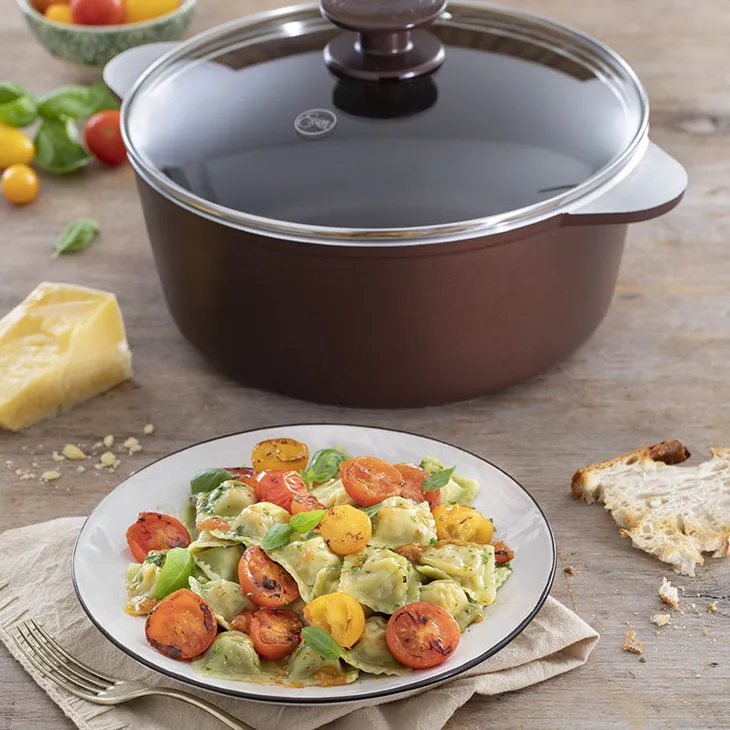
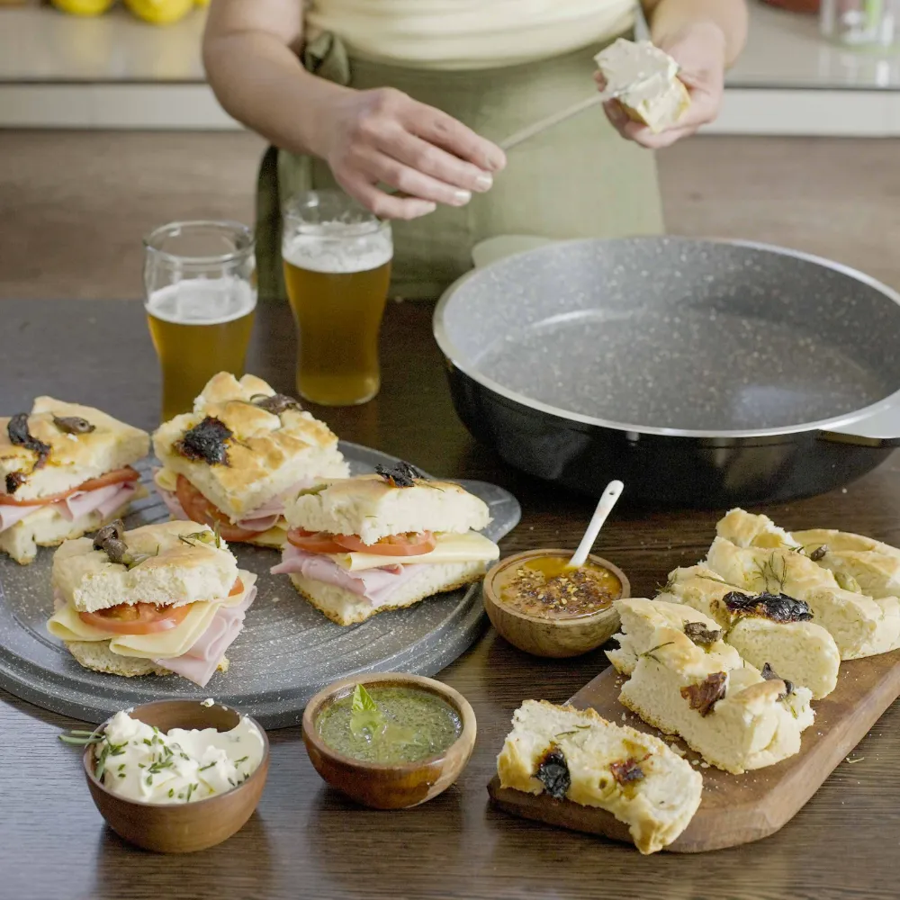

Ravioles de espinaca, rellenos de zapallo y queso, con tomates cherry salteados, oliva y albahaca

Ingredientes
Para la masa
- 1 Atado de Espinaca
- 1 Pizca de Sal fina
- 1 Unidad de Huevo
- 1/2 Taza de Agua
- 2 Cucharadas de Aceite de oliva
- 500 grs. de Harina 0000
Para el relleno
- 1/2 Unidad de Zapallo mediano
- 50 grs. de Queso rallado
- 50 grs. de Queso mozzarella
- 250 grs. de Tomate cherry
- c/n de Aceite de oliva
- c/n de Sal fina
- 1 Atado de Albahaca fresca
Preparación
Lavar y escurrir la espinaca, procesarla o picarla finamente.
Colocar la espinaca en un bowl, agregar el huevo y la sal, mezclar e incorporar el agua y el aceite de oliva.
Agregar de a poco la harina tamizada y comenzar a amasar hasta lograr una masa lisa.
Tapar con un repasador y dejar reposar la masa por 30 minutos aproximadamente.
Para el relleno: lavar y cortar en cubos el zapallo, colocarlo en la Cacerola apenas aceitada y llevar a fuego medio hasta que este tierno.
Una vez listo, realizar un puré y dejar enfriar.
Incorporar el queso rallado y la mozzarella cortada en pequeños cubos, mezclar y espolvorear con pimienta molida. Reservar.
Para el armado de los ravioles:
cortar en cuatro partes iguales la masa y estirar sobre la mesada enharinada con ayuda de un palo de amasar,debe quedar fina.
Colocar la masa sobre una raviolera enharinada, rellenar con la mezcla de zapallo y queso y por encima colocar otra masa.
Pasar el palo de amasar para marcar los ravioles. Desmoldar y llevar a la heladera hasta el momento de cocción.
Saltear en aceite de oliva los tomates cherry y salpimentar. Lavar y secar la albahaca.
Llevar a hervor la Cacerola con abundante agua y una cucharadita de sal.
Cocer la pasta por aproximadamente 5/7 minutos.
Colar y mezclar con los tomates cherry, por último agregar la albahaca fresca, aceite de oliva y servir.
Falafel con hummus y tabbule

Ingredientes
Falafel
- 2 Unidades de Cebolla de verdeo
- 1 Unidad de Garbanzo (lata)
- 85 grs. de Harina de garbanzos
- 1/2 Unidad de Limón (jugo)
- 1 Unidad de Ajo (diente)
- 1 Cucharadita de Comino
- 1 Cucharadita de Ají molido
- c/n de Aceite
Hummus
- 1 Unidad de Garbanzo (lata)
- 1 Unidad de Ajo (diente)
- 1 Cucharada de Tahini o pasta de sésamo o de maní
- 1/2 Unidad de Limón (jugo)
- 4 Cucharadas de Aceite de oliva
- 2 Cucharadas de Pimentón
Tabbule
- 200 grs. de Trigo burgol fino
- 1 Unidad de Pepino (en rodajas)
- 1 Unidad de Tomate redondo (en cubos)
- 2 Unidades de Cebolla de verdeo (picadas)
- 1 Unidad de Limón (jugo)
- c/n de Perejil (picado)
- c/n de Aceite de oliva
Preparación
Para el falafel procesamos la cebolla de verdeo, los garbanzos, la harina de garbanzos, el jugo de limón, el ajo, el comino y
el ají molido hasta obtener una pasta.
Les damos forma redonda con las manos y freímos en aceite caliente hasta que estén dorados.
Para el hummus procesamos los garbanzos con la pasta de sésamo, el ajo, el jugo de limón, el aceite de oliva y
la sal hasta que esté cremoso. Servimos en una fuente con aceite de oliva y pimentón por encima. Acompañamos con pan tostado.
Para el tabbule lavamos el trigo burgol varias veces hasta que el agua salga limpia y lo dejamos en remojo en agua tibia
durante 1 hora. Pasado ese tiempo lo colamos y mezclamos con la cebolla de verdeo, el tomate en cubos, el pepino y el perejil.
Condimentamos con jugo de limón, aceite de oliva, sal y pimienta.
Pan de espinaca

Ingredientes
- 500 grs. de Harina 0000
- 24 grs. de Levadura
- 75 grs. de Espinaca Procesada
- 225 cc. de Agua
- 10 grs. de Sal fina
- 1 Cucharadita de Azúcar
- 20 cc. de Aceite de oliva
Preparación
En un bowl colocamos la harina y hacemos un hueco en el centro.
Colocamos la sal en los bordes y en el hueco la levadura, la espinaca, el agua, el azúcar y el aceite.
Mezclamos y amasamos unos minutos hasta obtener una masa lisa.
Hacemos un bollo y lo dejamos reposar tapado 10 minutos en un lugar cálido.
Realizamos un hueco en el centro para darle forma de rosca.
Lubricamos el Savarín con aceite y acomodamos la masa adentro. Dejamos fermentar 30 minutos en la Cacerola tapada.
Cocinamos 35 minutos a fuego mínimo.
Desmoldamos y servimos.
Tarta caprese

Ingredientes
Para la mesa:
- 150 g. harina
- 65 cc. agua fría
- 1 cdita. sal fina
- 3 cdas. aceite de oliva Olivos
- 1 cdita. semillas de sésamo
Para el relleno:
- 3 un. huevos
- 2 cdas. queso crema
- 250 g. queso mozzarella cortado en cubos
- 200 g. tomates cherry cortados
- 200 g. tomates cherry cortados a la mitad
- c/n albahaca picada
- c/n sal y pimienta
Preparación
Para la masa colocamos todos los ingredientes en la Sartén y amasamos hasta integrar. La estiramos con la ayuda del estira masas. Reservamos.
Para el relleno mezclamos todos los ingredientes en un bowl y condimentamos con sal y pimienta a gusto.
Volcamos el relleno dentro de la masa, tapamos la Sartén y cocinamos 45 minutos a fuego mínimo.
Retiramos del fuego, dejamos enfriar unos minutos y desmoldamos.
Trío de croquetas sin TACC y veganas

Ingredientes
Para el falafel:
- 100 g. cebolla verdeo
- 200 g. garbanzos cocidos
- 85 g. harina garbanzos
- 1⁄4 taza jugo limón
- 1 un. diente de ajo
- 1⁄4 cdita. comino
- c/n sal
- c/n perejil
Para las croquetas de choclo y tofu:
- 1 1⁄2 taza choclo en granos cocido o de lata
- 150 g. tofu
- 2 cdas. yogur vegetal
- 1⁄2 taza polenta
- 1 taza copos de maíz triturados
- 1⁄2 cdita de sal
- 2 cdas. semillas sésamo
Para las croquetas de remolacha:
- 2 un. remolachas cocidas al vapor
- 1 un. zanahoria cocida al vapor
- 1 un. huevo (o 1 cda de maizena diluida en 2 cdas de agua)
- 40 g. levadura nutricional sabor queso
- c/n copos triturados
Preparación
Para el falafel procesamos la cebolla de verdeo, los garbanzos, la harina de garbanzos, el jugo de limón, el ajo, el comino y
el perejil hasta obtener una pasta
Les damos forma redonda con las manos y los reservamos.
Para las croquetas de choclo procesamos el choclo con el tofu, el yogur
vegano, la polenta y condimentos a gusto hasta formar una pasta. Les
damos forma con las manos y las rebozamos con los copos de maíz
triturados mezclados con las semillas de sésamo y la sal.
Para las de remolacha procesamos las remolachas cocidas con la zanahoria
hasta obtener un puré. Agregamos el ligante (el huevo o la preparación de maizena), la levadura nutricional para saborizar y
los copos triturados hasta que tenga consistencia y podamos darles forma.
Precalentamos la Bifera 3 minutos a fuego medio y cocinamos las croquetas con un poco de aceite de oliva hasta que
estén doradas de ambos lados.
Bomba de papa sin TACC

Ingredientes
- 4 un. papas
- 3 cdas. almidón de maíz
- 100 g. queso mozzarella cortado en cubitos
- c/n sal, pimienta y nuez moscada
Preparación
Colocamos en la Cacerola las papas lavadas con cáscara junto con 1⁄2 taza de agua.
Tapamos y cocinamos a fuego mínimo hasta que estén blandas.
Les retiramos la piel y hacemos un puré. Agregamos el almidón de maíz y los condimentos.
Formamos las bombas con las manos y las rellenamos con cubitos de queso mozzarella.
Precalentamos el aceite a fuego máximo y freímos las bombas en la Cacerola tapada hasta que estén doradas.
Retiramos y servimos con barbacoa o kétchup.
Ñoquis de calabaza con salsa rosa

Ingredientes
- 300 grs. de Calabaza (hecha puré)
- 100 grs. de Harina
- 1 Unidad de Huevo
- 50 grs. de Queso parmesano rallado
- 1 Cucharadita de Nuez moscada
- 500 cc. de Salsa de tomate
- 100 cc. de Crema de leche
- 1/4 Taza de Agua
- c/n de Albahaca fresca
Preparación
En un bowl mezclamos el puré de calabaza, la harina, el huevo, el queso, la nuez moscada y salpimentamos.
Formamos una masa sin amasar mucho y realizamos rollitos con las manos. Cortamos los ñoquis y reservamos.
Hervimos la salsa de tomate con la crema y reservamos.
Hervimos el agua en la cacerola y añadimos los ñoquis. Cocinamos hasta que estén listos y servimos con salsa, queso rallado y
albahaca.
Focaccia

Ingredientes
- 750g. harina común
- 10g. sal entrefina
- 10g. azúcar
- 25g. levadura fresca
- 50cc. aceite de oliva
- 350cc. agua
- c/n romero fresco
- 50g. aceitunas verdes sin carozo
- 50g. aceitunas negras sin carozo
- 50g. tomates secos hidratados
Preparación
Colocamos en un bowl o en disco la harina, la sal y formamos un hueco.
Ubicamos en el centro la levadura, el azúcar, el agua y el aceite de oliva y comenzamos a mezclar
hasta obtener una masa homogénea. Dejamos reposar tapada 15' aproximadamente a temperatura ambiente.
Distribuimos la masa y presionamos con la yema de los dedos para que queden las marcas.
Agregamos el romero, las aceitunas, los tomates secos ydejamos reposar 25 minutos.
Mientras tanto prendemos el fuego a leña y/o generoso carbón hasta generar brasas.
Cocinamos tapado hasta que la base forme cuerpo. Tapamos el disco, retiramos las brasas y las ubicamos sobre la misma.
De no estar disponible la tapa se puede dar vuelta la focaccia y continuar la cocción.
Otra opción de cocción es ubicar la masa en el grill multifunción, tapar con el disco y cocinar hasta que la base tome cuerpo
y esparcir brasas sobre el disco que oficia de tapa.
Pizza express

Ingredientes
- 200 g. harina
- 100 cc. agua
- 1 cdita. sal
- 1 cda. aceite de oliva
- Salsa de tomate, mozzarella, tomates cherry y ajo picado para armar
Preparación
Para la masa de la pizza mezclamos la harina, el agua, el aceite y la sal en un bowl y amasamos bien hasta obtener una masa lisa.
La dejamos descansar 30 minutos y pasado ese tiempo la dividimos en dos bollos.
Estiramos los bollos del tamaño de la Sartén y la precalentamos 2’ a
FUEGO CORONA.
Cocinamos la pizza hasta que se dore de ambos lados. Una vez que está ligeramente dorada agregamos la salsa de tomate,
la mozzarella, los tomates y el ajo y continuamos la cocción unos minutos más hasta que se derrita el queso.
Tempura de vegetales, cubos de brótola, cornalitos y mil hojas de papas

Ingredientes
Tempura
- 2 Unidades de Berenjena
- 2 Unidades de Zucchini
- 1 Unidad de Brócoli Pequeño
- 2 Unidades de Zanahoria
- 1 Unidad de Morrón rojo
- c/n de Sal y pimienta
- c/n de Aceite
- 3 Unidades de Huevo
- c/n de Panko
- 40 grs. de Harina 0000
- 160 cc. de Agua Fría
Mil hojas de papas
- 1 Kilo de Papa
- 350 cc. de Crema de leche
- 1 y 1/2 Taza de Queso rallado
- c/n de Nuez moscada
- c/n de sal y pimienta
Acompañamiento
- c/n de Aceite para freir
- 3 Unidades de Plátano
Preparación
Para el mil hojas de papas, lavar bien las papas y cortarlas bien finitas con la ayuda de una mandolina.
Colocar en la base de la Sartén una cucharada de crema de leche y por encima colocar una capa de papas hasta cubrir por completo.
Salpimentar y condimentar con la nuez moscada y espolvorear con queso rallado. Colocar por encima, nuevamente crema de leche y
otra capa de papas y queso. Continuar intercalando los ingredientes hasta completar por completo la Sartén.
Terminar con queso rallado y tapar.
Llevar a un fuego corona y cocinar durante unos 40' hasta que las papas estén bien cocidas y tiernas.
Una vez listo el mil hojas de papas apagar el fuego y reservar.
Cortar en tiras gruesas todos los vegetales previamente lavados y la brótola en cubos. Reservar.
Para los cubos de pescado batir y salpimentar dos huevos. Pasar por huevo los cubos de brótola y luego apanarlos en panko.
Colocar en la Cacerola abundante aceite y una vez caliente freír a fuego medio hasta que estén dorados.
Una vez listos, colocarlos sobre papel absorbente para retirar el exceso de aceite.
Para los cornalitos, en un bol colocar la harina y pasar los cornalitos por la misma.
Freír también en la Cacerola con aceite caliente donde freímos los cubos de brótola y colocarlos una vez listos también en papel absorbente.
Para las tempuras, en un bol mezclar un huevo con la harina y el agua fría. Salpimentar y mezclar.
Pasar los vegetales ya cortados en tiras por la mezcla de tempura y luego freír también en el aceite caliente.
Una vez listos colocarlos en papel absorbente.
Para los patacones, pelar y cortar los plátanos en porciones de 4 0 5 centímetros.
Sofreírlos en aceite caliente sin llegar a dorar. Retirarlos y aplastarlos con ayuda de una tabla, deben quedar de 1 cm de espesor aproximadamente.
Volver a freírlos hasta dorar, colocarlos sobre papel absorbente.
Servir la tempura de vegetales junto a los cubos de pescado y los cornalitos acompañados de salsa de soja y los patacones.
Tarta integral de choclo y zanahoria

Ingredientes
Masa:
- 1 Unidad de Huevo
- 4 Cucharadas de Aceite de Oliva Extra Virgen Essen (Varietal Mediterráneo)
- 4 Cucharadas de Agua
- 100 grs. de Harina leudante
- 100 grs. de Harina integral
- 1 Cucharadita de Sal fina
Relleno:
- 3 Unidades de choclo
- 1 Unidad de Zanahoria
- 100 grs. de Queso de Rallar
- 1 Unidad de Puerro picado
- 2 Cucharadas de Almidón de maíz
- 200 grs. de Queso crema
- 2 Unidades de Huevo
- 1 Cucharadita de Sal fina
- 1 Cucharadita de Pimienta
Preparación
Mezclamos el huevo con el aceite, el agua y la sal.
Agregamos las harinas. Formamos una masa y dejamos descansar 20’.
Desgranamos el choclo. Agregamos la zanahoria, el queso rallado, el puerro, el queso crema, la fécula y los huevos. Condimentamos.
Estiramos la masa y forramos el fondo y las paredes de la Sartén. Pinchamos con un palillo.
Rellenamos con la preparación de choclo.
Tapamos y cocinamos a fuego corona hasta finalizar la cocción.
Desmoldamos.
Pizza de papa y cebolla

Ingredientes
Para las cebollas:
- 2 un. cebollas moradas
- 1⁄2 taza aceite neutro
- 1⁄2 taza vinagre blanco
- 1⁄2 taza azúcar
- Condimentos a gusto (granos de pimienta, semillas de hinojo, cardamomo, hierbas aromáticas)
Para la papa:
- 1 un. papa
- 100 g. queso cremoso
- 50 g. queso azul (opcional)
Preparación
Para las cebollas encurtidas calentamos el aceite, el vinagre, el azúcar y las especias en la Cacerola,
y una vez que hierve, incorporamos las cebollas cortadas en aros finitos y apagamos el fuego. Reservamos y dejamos enfriar.
Cortamos una papa en rodajas finas con la mandolina y colocamos las rodajas en la Flip con aceite de oliva, formando una base.
Cocinamos a fuego mínimo hasta que se doren las papas, damos vuelta y agregamos los quesos.
Continuamos la cocción hasta que se derrita el queso.
Retiramos del fuego, desmoldamos y servimos con las cebollas por encima.
Tarta de hongos sin masa sin TACC

Ingredientes
- 250 g. queso en fetas
- 4 un. huevo
- 1 un. cebolla
- 150 cc. crema
- 150 g. hongos frescos
- c/n sal y pimienta
Preparación
Picamos en el multi o a mano la cebolla y los hongos. En un bowl mezclamos las verduras picadas con la crema y los huevos y
condimentamos a gusto.
Forramos la base y los bordes de la Sartén con las fetas de queso y rellenamos.
Cocinamos tapada 35’ a FUEGO MÍNIMO o hasta que el queso esté bien dorado y el relleno firme.
Retiramos del fuego, dejamos enfriar unos minutos y desmoldamos. Servimos como guarnición o con una ensalada fresca.
Capeletis de calabaza

Ingredientes
- 30 grs. de Manteca
- 1 Unidad de Cebolla picada fina
- 50 grs. de Harina 000
- 300 grs. de Calabaza cocida, pisada
- 1 Unidad de Huevo
- 50 grs. de Queso de Rallar
- 1 Pizca de Nuez moscada
- 1 Cucharadita de Sal fina
- 1 Cucharadita de Pimienta
- 24 Unidades de Tapa de empanada copetín
- 1 Cucharada de Aceite de Oliva Extra Virgen
Preparación
Calentamos la Cacerola pequeña tapada. Agregamos la manteca y luego la cebolla, tapamos y rehogamos a fuego mínimo.
Añadimos la harina de golpe, revolviendo bien. Luego incorporamos la calabaza, mezclamos y cocinamos 1’ a fuego corona.
Pasamos la preparación a un bol y dejamos enfriar. Agregamos el huevo, el queso rallado y los condimentos.
Rellenamos las tapas con la preparación anterior, humedecemos los bordes y sellamos dándoles forma de empanaditas.
Luego unimos los extremos, formando los capeletis.
Colocamos agua en la Olla, tapamos y llevamos a fuego fuerte hasta que rompa hervor.
Salamos el agua y añadimos el aceite. Introducimos el complemento con la pasta,
tapamos y continuamos a fuego mínimo hasta finalizar la cocción.
Apagamos el fuego y retiramos la pasta con el complemento.
Servimos con salsa 4 quesos.
Tortilla de espinaca rellena con queso sin TACC

Ingredientes
- 750 g. espinaca descongelada y escurrida
- 1 un. cebolla chica picada
- 4 un. huevos
- 100 g. mozzarella en fetas
- c/n sal y pimienta
Preparación
Mezclamos en un bowl la espinaca con la cebolla picada, los huevos y condimentos a gusto.
Precalentamos 3’ la Sartén a FUEGO MÍNIMO, agregamos aceite y volcamos la mitad de la preparación.
Añadimos la mozzarella en fetas en el centro y por arriba el resto de la mezcla.
Cocinamos a FUEGO MÍNIMO hasta que esté dorada, la damos vuelta y continuamos la cocción hasta dorarla del otro lado.
Retiramos del fuego, desmoldamos y servimos.
Lasagna de ricota y calabaza

Ingredientes
Masa:
- 1 Unidad de Huevo
- 5 Cucharadas de Harina leudante 100 grs
- 200 cc. de Leche
- 1 Cucharada de Aceite de Oliva Olivos del Salar
- 1 Pizca de Sal fina
- 1 Pizca de Pimienta
Relleno:
- 200 grs. de Ricota
- 200 grs. de Calabaza rallada
- 50 grs. de Queso rallado
- 1 Unidad de Huevo
- 2 Cucharadas de Almidón de maíz
- 1 Pizca de Sal fina
- 1 Pizca de Pimienta
- 1 Pizca de Nuez moscada
- 50 grs. de Queso de máquina
- 50 grs. de Jamón cocido
Cobertura:
- 250 cc. de Salsa de tomate
- 1 Puñado de Queso rallado
- 1 Cucharada de Aceite de oliva en spray Essen
Preparación
Procesamos los ingredientes indicados para la masa. Reservamos.
En un bol colocamos la ricota, la calabaza, el queso rallado, el huevo y la fécula. Mezclamos y condimentamos.
Apoyamos la Flip sobre la hornalla (sobre el lado más profundo) y precalentamos 2’ a fuego medio.
Rociamos con aceite de oliva en spray y volcamos la mitad de la mezcla de panqueque.
Rellenamos con la preparación de ricota y calabaza.
Encima distribuimos las fetas de queso y arriba las de jamón (cubriendo todo el relleno).
Por último volcamos el resto de la mezcla de panqueque.
Cerramos y cocinamos 10’ a fuego mínimo.
Damos vuelta la Flip y continuamos a fuego mínimo hasta finalizar la cocción (5' aprox).
Cortamos la preparación en 4 partes iguales (usando una espátula).
Las servimos encimadas de a dos. Cubrimos con salsa de tomate caliente y espolvoreamos con queso rallado.
Pan trenzado tricolor

Ingredientes
- 750 grs. de Harina 0000
- 330 cc. de Agua tibia
- 40 grs. de Puré de Calabaza
- 40 grs. de Puré de Espinaca
- 40 grs. de Puré de Remolacha
- 15 grs. de Sal fina
- 10 grs. de Levadura seca
- 40 grs. de Manteca pomada
Preparación
En un bowl colocamos la harina y en los bordes la sal. Hacemos un hueco en el centro y agregamos el agua y la levadura.
Amasamos hasta integrar todo e incorporamos la manteca pomada. Seguimos amasando hasta obtener una masa lisa.
Dividimos la masa en 3 partes iguales y amasamos una parte con el puré de calabaza, otra con el de espinaca y otra con el de remolacha,
con un poco de harina adicional si es necesario. Dejamos reposar las masas 30’ tapadas en un lugar cálido.
Estiramos cada masa con forma de cilindro y hacemos una trenza. La colocamos en el Savarín lubricado con aceite de oliva y
dejamos fermentar 30’.
Colocamos el Savarín en la Cacerola y cocinamos 45’ a fuego mínimo.
Locro vegano

Ingredientes
- 400 gr. porotos blancos (remojados en agua desde la noche anterior)
- 400 gr. maíz blanco (remojado en agua desde la noche anterior)
- 2 kg. calabaza cortada en cubos
- 1 kg. cebolla picada
- 300 gr. hongos fileteados
- 500 gr. zanahoria picada
- 6 un. dientes de ajo
- 500 gr. cebolla de verdeo picada 2,5 lts. caldo de verduras
- c/n sal, pimienta, pimentón, comido y ají molido
Para el sofrito:
- c/n aceite de oliva, cebolla de verdeo (parte verde) y ají molido
Preparación
Precalentamos la Cacerola tapada 5’ a FUEGO MÁXIMO.
Agregamos aceite de oliva a gusto y la cebolla, los hongos, la zanahoria, el ajo y la cebolla de verdeo. Salteamos alrededor de 15’.
Incorporamos los porotos, el maíz, la calabaza, el caldo y los condimentos.
Continuamos la cocción aproximadamente 1 hora a fuego mínimo, hasta que los porotos y el maíz estén cocidos.
Para el sofrito saltemos la parte verde de la cebolla de verdeo con aceite de oliva y agregamos ají molido a gusto.
Servimos el locro con el sofrito por arriba.
Arepas rellenas sin TACC

Ingredientes
- 2 tazas harina de maíz precocida
- 1 cda. sal
- 1 cdita. aceite
- 2 tazas agua tibia
- 100 gr. queso mozzarella
- 2 un. huevos
- c/n sal y pimienta
Preparación
En un bowl colocamos el agua, la sal y el aceite. Vamos agregando de a poco la harina de maíz y amasamos hasta integrar.
Dejamos reposar la masa 15’.
Damos forma a las arepas con las manos, formando bolitas y aplastándolas.
Precalentamos la plancha 3’ a FUEGO MEDIO y cocinamos las arepas alrededor de 5’ de cada lado, hasta que estén doradas.
En la misma plancha cocinamos los huevos revueltos.
Cortamos las arepas sin llegar al extremo y las rellenamos con queso y huevo revuelto.
Volvemos a cocinarlas en la plancha hasta que se derrita el queso.
Malfatis de espinaca

Ingredientes
- 400 grs. de Ricota
- 1 Atado de Espinaca
- 100 grs. de Puré de papa frío
- c/n Nuez Moscada
- 1 Unidad de Yema
- 120 grs. de Harina
- 100 grs. de Queso parmesano rallado
- c/n de Sal fina
- c/n de Pimienta
Salsa
- 1 Unidad de Cebolla
- 1 Unidad de Ajo diente
- 500 cc. de Puré de tomate
- 1 Unidad de Hoja de laurel
- c/n de Sal fina
- c/n de Pimienta
- c/n de Queso parmesano
- c/n de Aceite de oliva
Preparación
Para los malfatis, colocar en un bowl la espinaca cruda picada con la ricotta, el puré, frío, la sal, pimienta y nuez moscada.
Agregar la yema de huevo y la harina. Mezclar bien y sumar el queso rallado.
Dar forma a los malfattis con la ayuda de las manos armando bolitas y reservar en una fuente.
Para la salsa de tomates, picar la cebolla bien finita y cocinar junto al ajo en el aceite de oliva hasta transparentar.
Una vez cocida la cebolla, agregar la salsa de tomate con pulpa y salpimentar.
Agregar una hoja de laurel y cocinar a fuego lento durante 15 a 20 minutos. Reservar.
Colocar en la Cacerola abundante agua con sal y una vez que rompa el hervor, cocinar los malfatis.
Retirar del agua y colocar en una fuente junto a la salsa.
Espolvorear con el queso y servir.